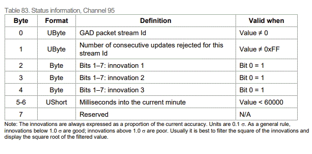

Advanced Options
In this section we’ve included features, concepts and commands that you won’t need unless you’re doing something very specific with your GAD setup, or are conducting some advanced tests.
Stream priority
Typically, the INS will decide which data to use based on the estimated error of each measurement. However, in some use cases it can be useful to be able to set priority of relative streams. This can be done with a single advanced command:
-stream_priority_[X]_[Y]_[Z]
[X] = high priority stream ID
[Y] = low priority stream ID
[Z] = period (s) after using data from stream [X] to block stream [Y].
It is possible to use this option on the internal GNSS streams, using the following stream IDs:
Data type |
Stream ID |
|---|---|
GNSS Position |
1 |
GNSS Velocity |
2 |
GNSS Attitude |
3 |
Position-only initialisation
Warning
This feature is still in development. At present, to use position-only initialisation you need to also have a source of heading data. If you do not have this, you will not be able to use position-only initialisation. We are working on building the ability to calculate heading from your position data right now.
When you turn on your INS it will initialise – meaning it will establish its position, velocity, orientation, and the time. Your INS can initialise in a few ways:
It can use its own GNSS and IMU data to initialise.
If the system can’t get a GNSS signal, but has access to position, velocity, and heading data from GAD sources, it can use those to initialise.
If the system can’t get a GNSS signal, and you have GAD providing position data but not velocity or heading data, you need to use position-only initialisation.
Position-only initialisation is useful when you are unable to initialise your INS normally – either because you’re in an area with poor or no GNSS signal such as indoors, in a forest, or in an urban canyon, or you don’t have a source of heading or velocity data from a GAD.
Note
Dynamic or static initialisation?
By default an INS needs to be moving in order to initialise – this is known as dynamic initialisation. This is because the system usually needs forward motion to calculate a position.
However, you can activate static initialisation in your INS’ config file and initialise your INS without having to move – as long as you have either:
Dual GNSS antennae (which enables the INS to get a heading without moving).
GAD sources providing velocity and heading data that calculate those values while stationary.
Providing velocity and orientation
If you choose to initialise your INS using position data, then the INS will need to calculate its starting velocity, heading, and time separately.
Add the following advanced command to your INS config file:
Velocity
-gad_init_vel_from_pos_[X]
Note that X should be “on” or “off” depending on whether you want to activate or deactivate the setting.
By itself, this means that the INS will dynamically initialise once the velocity estimate exceeds 5m/s. If you want to change this, you can edit the following line of code, which is already in the config file:
-motion_speed[X]
Note that X should be the speed you want for dynamic initialisation, in m/s. If you enter a speed below 5m/s then it’s likely that the accuracy of your measurements will be negatively affected.
Time
Your INS needs a source of GPS time in order to initialise correctly. Since position-only initialisation is typically used in GNSS-poor environments, this means you will likely need a GNSS repeater that can give your system GPS time.
As an alternative to GNSS time, a Precision Time Protocol (PTP) option for OxTS INS’ will soon be released. Contact OxTS support for more information.
Note
GNSS repeater licence
Because of their potential to cause interference with any other RF system in the vicinity, most telecom regulators require users to obtain a licence to operate GNSS repeaters.
Interfacing with a CAN bus
The CAN bus allows you to use a car’s own data systems as aiding devices. This is most commonly done by OEMs, but can be done by other users too, if they know the correct message IDs to use.
The GAD SDK does not include the functionality required to interface with the CAN bus, but it is relatively straightforward to use the Python package python-can using:
pip install python-can
The python-can package has its own documentation, which provides detailed instructions on how to use it in order to interface with the CAN bus.
See the CAN wheelspeed example for more information on how to implement CAN messages as a GAD source.
NCOM Output
NCOM is the most common output format from the OxTS INS, by default it is output over UDP to port 3000.
For information on decoding the NCOM format please see the documentation provided on the OxTS support page:
https://support.oxts.com/hc/en-us/articles/115002163985-Decoding-OxTS-navigation-outputs
The latest NCOM manual can be found here:
https://www.oxts.com/ncom-and-mcom/
When the INS receives a GAD packet with valid time it will output the packet information on status channel 95. This packet is scheduled at 1 Hz.
The innovations will match the stream type. To date, no GAD update includes more than three measurements in the same packet, therefore there are only three innovations in this packet. Not all innovations will be valid for all stream types, for example; attitude innovation updates will only use innovation1 and innovation2 measurements.
Note also when using many streams there may be issues getting updates from a specific stream as this status channel will always return data from the last received GAD packet when the packet is sent. It is possible that data will not be visible from a specific stream when data is being constantly updated from another stream.